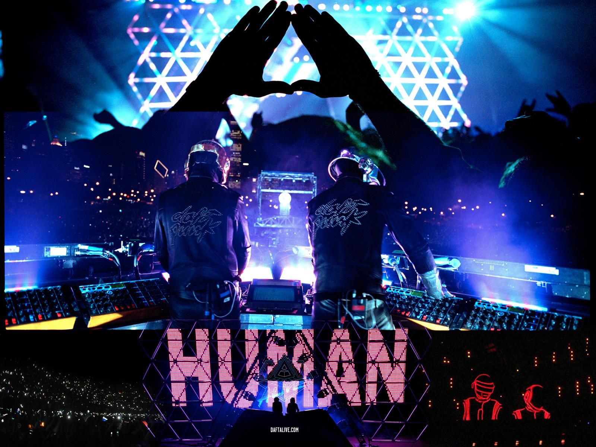
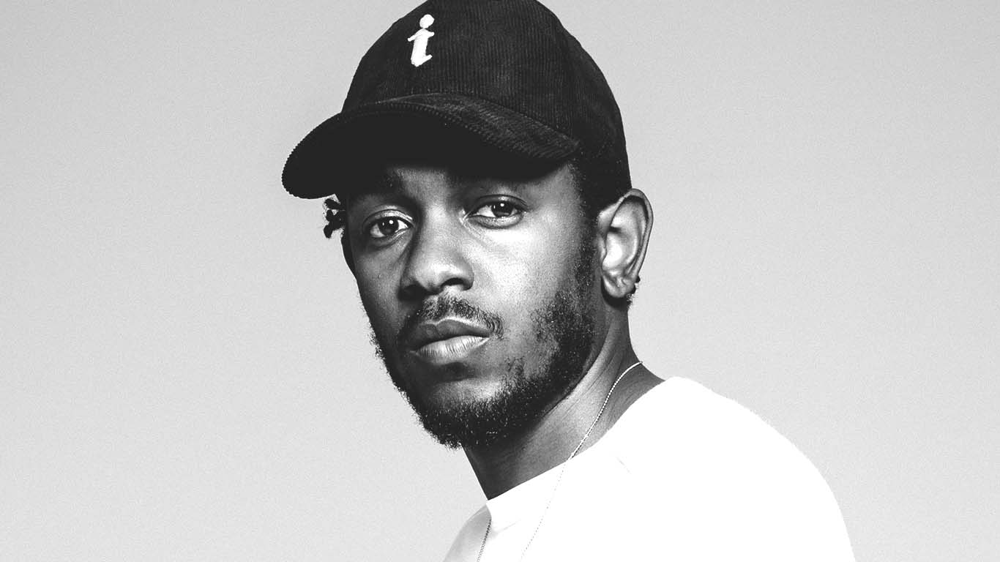

this webpage is all about music.
lyrics to get lucky
Like the legend of the Phoenix All ends with beginnings What keeps the planets spinning (uh) The force from the beginning (Look) We've come too far to give up who we are So let's raise the bar and our cups to the stars She's up all night to the sun I'm up all night to get some She's up all night for good fun I'm up all night to get lucky We're up all night to the sun We're up all night to get some We're up all night for good fun We're up all night to get lucky We're up all night to get lucky We're up all night to get lucky We're up all night to get lucky We're up all night to get lucky The present has no ribbon Your gift keeps on giving, What is this I'm feeling? If you wanna leave I'm with it (ah) We've come too far to give up who we are So let's raise the bar and our cups to the stars She's up all night to the sun I'm up all night to get some She's up all night for good fun I'm up all night to get lucky We're up all night to the sun We're up all night to get some We're up all night for good fun We're up all night to get lucky We're up all night to get lucky We're up all night to get lucky We're up all night to get lucky We're up all night to get lucky (We're up all night to get We're up all night to get We're up all night to get We're up all night to get) (We're up all night to get (together) We're up all night to get (let's get funked again) We're up all night to get lucky We're up all night to get lucky) (We're up all night to get lucky We're up all night to get lucky We're up all night to get lucky We're up all night to get lucky) (We're up all night to get lucky We're up all night to get lucky We're up all night to get lucky We're up all night to get lucky) We've (we're up all night to get lucky) Come too far (we're up all night to get lucky) To give up (we're up all night to get lucky) Who we are (we're up all night to get lucky) So let's (we're up all night to get lucky) Raise the bar (we're up all night to get lucky) And our cups (we're up all night to get lucky) To the stars (we're up all night to get lucky) She's up all night to the sun I'm up all night to get some She's up all night for good fun I'm up all night to get lucky We're up all night to the sun We're up all night to get some We're up all night for good fun We're up all night to get lucky We're up all night to get lucky We're up all night to get lucky We're up all night to get lucky We're up all night to get lucky We're up all night to get lucky We're up all night to get lucky We're up all night to get lucky We're up all night to get lucky
lyrics to ADHD
[Hook] Fuck that 8 doobies to the face Fuck that 12 bottles in the case Nigga, fuck that 2 pills and a half, wait Nigga, fuck that Got a high tolerance When your age don’t exist [Verse 1] Man, I swear My nigga trippin off that shit again Pick him up, then I set him in Cold water, then I order someone to bring him vicodin Hope to take the pain away From the feeling that he feel today You know when you part of section 80 And you feeling like no one can relate Cause you are, you are A loner, loner Marijuana, endorphins Make you stronger, stronger I’m in the house party trippin off My generation sippin cough syrup like its water Never no pancakes in the kitchen Man, no wonder our lives is caught up In the daily superstition That the word is bout to end Who gives a fuck? we never do listen Unless it comes with an 808 A melody and some hoes Playstation and some drank Technology bumping Soul Looking around and all I see Is a big crowd, that’s product of me And they probably relatives Relevant for a rebel’s dream Yep, the president is black She black too Purple label on her back But that dap Is like when she take it straight to the head Then she look at me She got ADHD [Hook] [Bridge] Like woah oh oh woah [x4] (Don’t got a limit just gimme some more with it) (Don’t got a limit just gimme some more with it) (They always told me ad-hd did it) [Verse 2] And then she started And then she started Feeling herself like no on else in this apartment Beg you pardon Oh I rap baby, how old are you? She say 22, I say 23 Ok then we all crack babies Damn, why you say that? She said where my drink at? I’mma tell you later, just tell your neighbors Have the police relax I stood up, shut the blinds Closed the screen, jumbotron Made it to the back, where she reside Then she said, read between the lines Yep, hope that I get close enough When the lights turn down And the fact that she just might open up When the new flow start to drown Her body and I, know the both of us really deep in the move now It’s nothing we can do now Somebody walked in with a pound Of that Bay Area kush She looked at me then looked At it, then she grabbed it Then she said, get it understood You know why we crack babies Because we born in the 80s That ADHD crazy [Hook] [Bridge] [Outro] You can have all my shine I’ll give you the light Double cup, deuce, four, six Just mix it in Sprite Ecstasy, shrooms, blow, dro, hoes Whatever you like You can have all my shine I’ll give you the light
lyrics to lose yourself to dance
I know you don't get a chance to take a break this often I know your life is speeding and it isn't stopping Here take my shirt and just go ahead and wipe up all the Sweat, sweat, sweat Lose yourself to dance Lose yourself to dance Lose yourself to dance Lose yourself to dance Lose yourself to dance Lose yourself to dance Lose yourself to dance Lose yourself to dance Lose yourself to dance I know you don't get a chance to take a break this often I know your life is speeding and it isn't stopping Here take my shirt and just go ahead and wipe up all the Sweat, sweat, sweat [Repeating:] Lose yourself to dance (come on) Lose yourself to dance (at all) Everybody dancing on the floor Getting you ready for some more Everybody on the floor Yeah, come on I know you don't get a chance to take a break this often I know your life is speeding and it isn't stopping Here take my shirt and just go ahead and wipe up all the Sweat, sweat, sweat Lose yourself to dance (come on) Lose yourself to dance (at all) Everybody dancing on the floor Getting you ready for some more Everybody on the floor Yeah, come on

lyrics to mortal man
The ghost of Mandela, hope my flows they propel it Let these words be your earth and moon you consume every message As I lead this army make room for mistakes and depression And with that being said my nigga, let me ask this question: When shit hit the fan, is you still a fan? When shit hit the fan (one two, one two) When shit hit the fan, is you still a fan? When shit hit the fan, is you still a fan? The ghost of Mandela, hope my flows they propel it Let these words be your earth and moon you consume every message As I lead this army make room for mistakes and depression And with that being said my nigga, let me ask this question: When shit hit the fan, is you still a fan? When shit hit the fan, is you still a fan? Want you look to your left and right, ask you friends When shit hit the fan, is you still a fan? Do you believe in me? Are you deceiving me? Could I let you down easily, is your heart where it need to be? Is your smile on permanent? Is your vow on lifetime? Would you know where the sermon is if I died in this next line? If I'm tried in a court of law, if the industry cut me off If the government want me dead, plant cocaine in my car Would you judge me a drug kid or see me as K. Lamar Or question my character and degrade me on every blog Want you to love me like Nelson, want you to hug me like Nelson I freed you from being a slave in your mind, you're very welcome You tell me my song is more than a song, it's surely a blessing But a prophet ain't a prophet til they ask you this question: When shit hit the fan, is you still a fan? When shit hit the fan, is you still a fan? Want you look to your left and right, make sure you ask you friends When shit hit the fan, is you still a fan? The ghost of Mandela, hope my flows they propel it Let these words be your earth and moon you consume every message As I lead this army make room for mistakes and depression And if you riding with me Do you believe in me? How much you believe in her? You think she gon' stick around if them 25 years occur? You think he can hold you down when you down behind bars hurt? You think y'all on common ground if you promise to be the first? Can you be immortalised without your life being expired? Even though you share the same blood is it worth the time? Like who got your best interest? Like how much are you dependent? How clutch are the people that say they love you and who pretending? How tough is your skin when they turn you in, do you show forgiveness? What brush do you bend when dusting your shoulders from being offended What kind of den did they put you in when the lions start hissing What kind of bridge did they burn, revenge or your mind when it's mentioned? You wanna love like Nelson, you wanna be like Nelson You wanna walk in in his shoes but you peace-making seldom You wanna be remembered that delivered the message That considered the blessing of everyone, this your lesson for everyone, say When shit hit the fan, is you still a fan? When shit hit the fan, is you still a fan? Want you look to your left and right, make sure you ask you friends When shit hit the fan, is you still a fan? The ghost of Mandela, hope my flows they propel it Let these words be your earth and moon you consume every message As I lead this army make room for mistakes and depression And if you riding with me I been wrote off before, I got abandonment issues I hold grudges like bad judges, don't let me resent you That's not Nelson-like, want you to love me like Nelson I went to Robben's Island analysing, that's where his cell is So I could find clarity, like how much you cherish me Is this relationship a fake or real as the heavens be? See I got to question it all, family, friends, fans, cats, dogs Trees, plants, grass, how the wind blow Murphy's Law, generation X, will I ever be your ex? Floss off a baby step, mobbed by the mouth a bit Pause, put me under stress Crawled under rocks, ducking y'all, it's respect But then tomorrow, put my back against the wall How many leaders you said you needed then left ‘em for dead? Is it Moses, is it Huey Newton or Detroit Red? Is it Martin Luther, JFK, shooter you assassin Is it Jackie, is it Jesse, oh I know, it's Michael Jackson, oh When shit hit the fan, is you still a fan? When shit hit the fan, is you still a fan? That nigga gave us Billie Jean, you say he touched those kids? When shit hit the fan, is you still a fan? The ghost of Mandela, hope my flows they propel it Let my word be your earth and moon you consume every message As I lead this army make room for mistakes and depression And if you riding with me nigga, let me ask this question nigga [Kendrick Lamar:] "I remember you was conflicted Misusing your influence Sometimes I did the same Abusing my power, full of resentment Resentment that turned into a deep depression Found myself screaming in the hotel room I didn't wanna self destruct The evils of Lucy was all around me So I went running for answers Until I came home But that didn't stop survivor's guilt Going back and forth trying to convince myself the stripes I earned Or maybe how A-1 my foundation was But while my loved ones was fighting the continuous war back in the city, I was entering a new one A war that was based on apartheid and discrimination Made me wanna go back to the city and tell the homies what I learned The word was respect Just because you wore a different gang colour than mines Doesn't mean I can't respect you as a black man Forgetting all the pain and hurt we caused each other in these streets If I respect you, we unify and stop the enemy from killing us But I don't know, I'm no mortal man, maybe I'm just another nigga" Shit and that's all I wrote I was gonna call another nigga but, it ain't really a poem, I just felt like it's something you probably could relate to. Other than that, now that I finally got a chance to holla at you, I always wanted to ask you about a certain situa-, about a metaphor actually, you spoke on the ground. What you mean ‘bout that, what the ground represent? [2Pac:] The ground is gonna open up and swallow the evil. That's how I see it, my word is bond. I see and the ground is the symbol for the poor people, the poor people is gonna open up this whole world and swallow up the rich people. Cause the rich people gonna be so fat, they gonna be so appetising, you know what I'm saying, wealthy, appetising. The poor gonna be so poor and hungry, you know what I'm saying it's gonna be like… there might be some cannibalism out this mutha, they might eat the rich [Kendrick Lamar:] Aight so let me ask you this then, do you see yourself as somebody that's rich or somebody that made the best of their own opportunities? [2Pac:] I see myself as a natural born hustler, a true hustler in every sense of the word. I took nothin', I took the opportunities, I worked at the most menial and degrading job and built myself up so I could get it to where I owned it. I went from having somebody manage me to me hiring the person that works my management company. I changed everything I realised my destiny in a matter of five years you know what I'm saying I made myself a millionaire. I made millions for a lot of people now it's time to make millions for myself, you know what I'm saying. I made millions for the record companies, I made millions for these movie companies, now I make millions for us [Kendrick Lamar:] And through your different avenues of success, how would you say you managed to keep a level of sanity? [2Pac:] By my faith in God, by my faith in the game, and by my faith in all good things come to those that stay true. You know what I'm saying, and it was happening to me for a reason, you know what I'm saying, I was noticing, I was punching the right buttons and it was happening. So it's no problem, you know I mean it's a problem but I'm not finna let them know. I'm finna go straight through [Kendrick Lamar:] Would you consider yourself a fighter at heart or somebody that only reacts when they back is against the wall? [2Pac:] I like to think that at every opportunity I've ever been threatened with resistance it's been met with resistance. And not only me but it goes down my family tree. You know what I'm saying, it's in my veins to fight back [Kendrick Lamar:] Aight well, how long you think it take before niggas be like, we fighting a war, I'm fighting a war I can't win and I wanna lay it all down [2Pac:] In this country a black man only have like 5 years we can exhibit maximum strength, and that's right now while you a teenager, while you still strong or while you still wanna lift weights, while you still wanna shoot back. Cause once you turn 30 it's like they take the heart and soul out of a man, out of a black man in this country. And you don't wanna fight no more. And if you don't believe me you can look around, you don't see no loud mouth 30-year old muthafuckas [Kendrick Lamar:] That's crazy, because me being one of your offspring of the legacy you left behind I can truly tell you that there's nothing but turmoil goin' on so I wanted to ask you what you think is the future for me and my generation today? [2Pac:] Shit, I think that niggas is tired-a grabbin' shit out the stores and next time it's a riot there's gonna be bloodshed for real. I don't think America can know that. I think American think we was just playing and it's gonna be some more playing but it ain't gonna be no playing. It's gonna be murder, you know what I'm saying, it's gonna be like Nat Turner, 1831, up in this muthafucka. You know what I'm saying, it's gonna happen [Kendrick Lamar:] That's crazy man. In my opinion, only hope that we kinda have left is music and vibrations, lotta people don't understand how important it is. Sometimes I be like, get behind a mic and I don't know what type of energy I'mma push out, or where it comes from. Trip me out sometimes [2Pac:] Because the spirits, we ain't really rappin', we just letting our dead homies tell stories for us [Kendrick Lamar:] Damn I wanted to read one last thing to you. It's actually something a good friend had wrote describing my world. It says: "The caterpillar is a prisoner to the streets that conceived it Its only job is to eat or consume everything around it, in order to protect itself from this mad city While consuming its environment the caterpillar begins to notice ways to survive One thing it noticed is how much the world shuns him, but praises the butterfly The butterfly represents the talent, the thoughtfulness, and the beauty within the caterpillar But having a harsh outlook on life the caterpillar sees the butterfly as weak and figures out a way to pimp it to his own benefits Already surrounded by this mad city the caterpillar goes to work on the cocoon which institutionalizes him He can no longer see past his own thoughts He's trapped When trapped inside these walls certain ideas start to take roots, such as going home, and bringing back new concepts to this mad city The result? Wings begin to emerge, breaking the cycle of feeling stagnant Finally free, the butterfly sheds light on situations that the caterpillar never considered, ending the eternal struggle Although the butterfly and caterpillar are completely different, they are one and the same." What's your perspective on that? Pac, Pac, Pac

lyrics to beyond
Dream, Beyond dreams Beyond life you will find your song Before sound, to be found close your eyes And rise higher, still endless thrill To the land of love Beyond love Come alive, Angel eye Forever watching you and I You are the night, you are the ocean You are the light behind the cloud You are the end and the beginning A world where time is not allowed There's no such thing as competition To find our way we lose control Remember – love's our only mission This is the journey of the soul The perfect song is framed with silence It speaks of places never seen Your home's a promise long forgotten It is the birthplace of your dreams